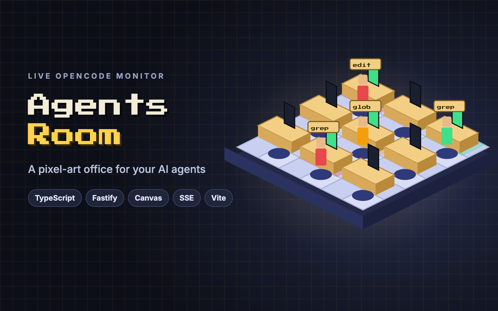
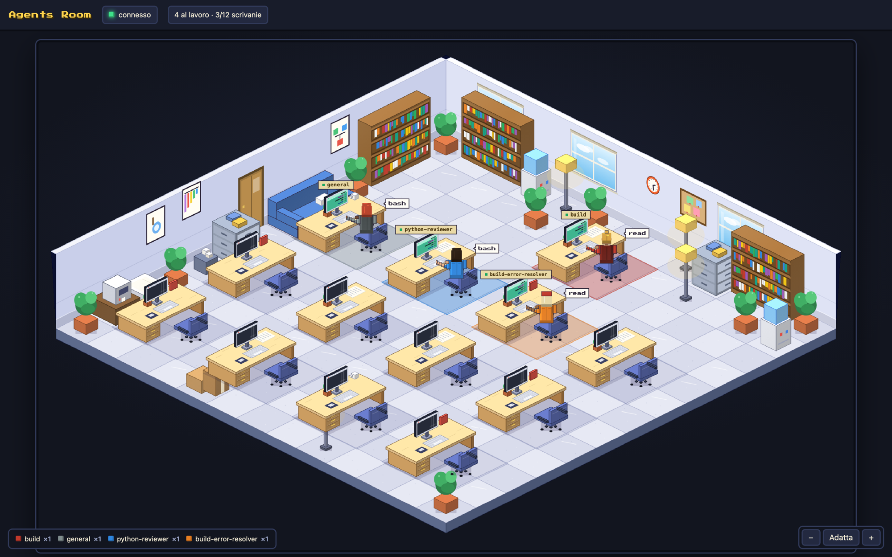
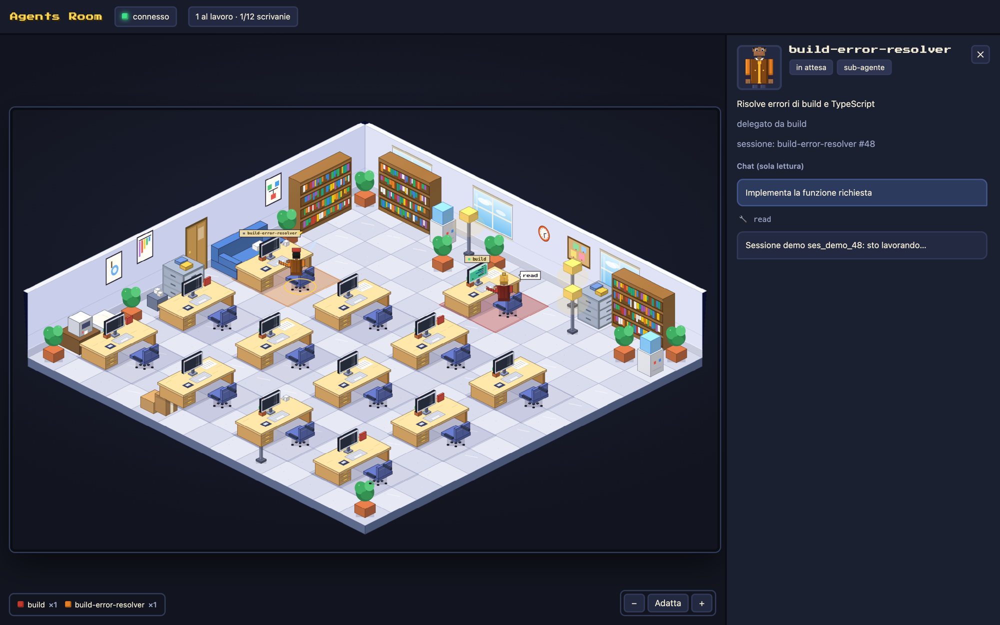
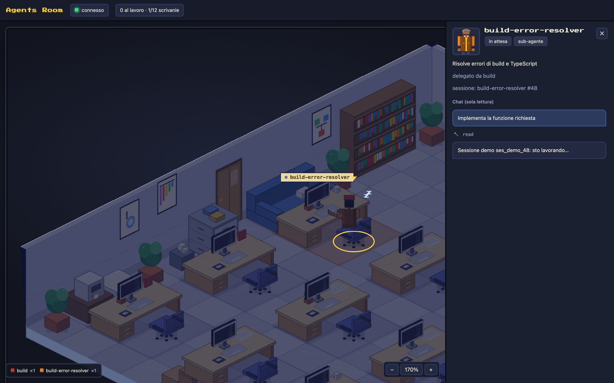

A pixel-art isometric office that shows your AI agents at work, live.
Agents Room turns the invisible work of AI coding agents into a small isometric office you can simply watch: every running session sits at a desk, types, waits or hands work over to a colleague.
When an orchestrating agent delegates tasks to specialists such as reviewers, planners or build fixers, each delegated session walks in through the door, takes a free desk and gets to work, showing the tool it is currently using in a speech bubble. When it finishes, the desk is released and the office quietly dims when nobody is working.
Make a flood of parallel agent activity understandable at a glance, with something that feels more like a living scene than a log.

The unit of the office is the session, not the agent type: two sub-agents of the same kind occupy two desks. A main desk hosts the root conversation, while twelve slots take the delegated sessions as they start.
Each person has a distinct look and a colour-coded desk carpet, a name tag, and a bubble with the last tool in use. Seated and typing means active; a sleeping "zzz" means waiting for input.
Selecting an occupied desk opens a side panel with the agent portrait, its role and description, who delegated the work and what it is delegating, plus a read-only view of that session chat.
Nothing can be sent or changed from the panel: it is a window onto the work, never a remote control.


Zoomed in, the pixel art shows its detail: furniture, plants, shelves and a character resting at the keyboard with a sleeping bubble while it waits.
A lightweight backend discovers the local agent server, authenticates with it and turns its event stream into a compact state model of sessions and agents. Credentials stay on the server and never reach the browser. The state is pushed to the page over a single live stream, where a reducer keeps it up to date.
The front end draws the isometric office on a canvas entirely from code, with pathfinding for people walking in and out and a small choreographer that turns state changes into movement. The same pipeline can be fed by a simulated source, which makes the project easy to try without any agent running.
Shared types end to end, from the server event model to the canvas renderer.
A small backend that talks to the agent server, keeps the state and fans it out to the browser.
A single live stream pushes every change to the page, with automatic reconnection.
The whole office is drawn in code at the real pixel density of the screen, with no image assets.
Fast front-end tooling with instant reload while developing.